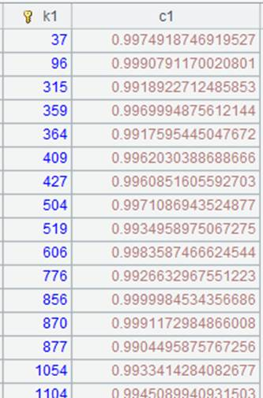
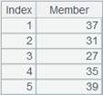

Description:
Calculate the difference between sequence members of a sequence by removing from the first sub-sequence the members that exist in any of the other sub-sequences.
Syntax:
A .diff()
Note:
Generally sequence A contains multiple sub-sequences. The function calculates the difference between its sequence-type members to ensure that the new sequence doesn¡¯t include any member of the other sub-sequences.
The algorithm is to compute the difference between the first sub-sequence and the second one, then compute the difference between the result and the third sub-sequence, and so on and so forth.
If the sub-sequences are record sequences, compare records in same position through their store addresses. If the addresses are different, the records are different members.
Parameters:
|
A |
A sequence whose members are sequences |
Return value:
A new sequence created by performing difference operations on A¡¯s first sub-sequence and the other sub-sequences.
Example:
|
|
A |
|
|
1 |
=[[1,2,3,4,5],[3,7,8]].diff() |
[1,2,4,5] |
|
2 |
=[[1,2,3],[3,2],1].diff() |
[] |
|
3 |
=[[1,2,2,3],2].diff() |
[1,2,3] remove only one of the duplicate members |
|
4 |
=demo.query("select top 2 * from EMPLOYEE") |
 |
|
5 |
=demo.query("select top 1 * from EMPLOYEE") |
 |
|
6 |
=[A4,A5].diff() |
Since A4 and A5 come from different table sequences and have different store addresses, so the same records are regarded as different members |

Related functions: